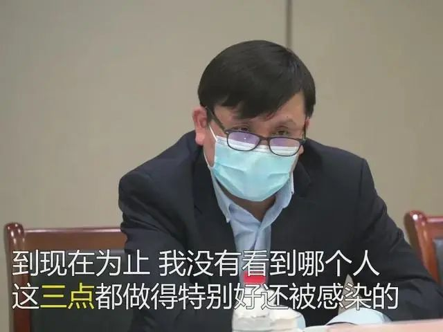
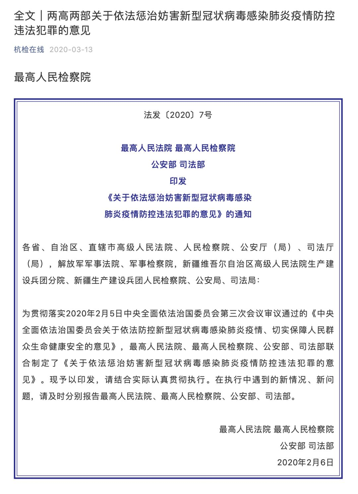
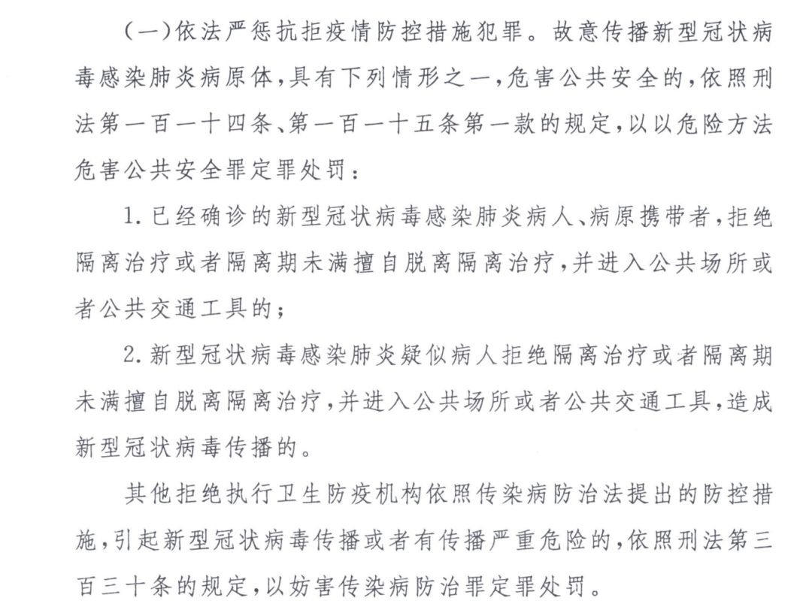

确诊超560例8州进入紧急状态，美国是否会步意大利后尘？
原文链接 备份链接 2月29日，特朗普在保守派政治行动会议上。来源：特朗普推特 记者：刘芳 “ “最害怕的还是（在疫情过后）我人没怎么样但是课却没过。” ” 不断扩散的新冠肺炎疫情给美国东西海岸人口稠密地区持续带来压力，就连总统特朗普也因 …

近日
网上流传的这样一段视频
引发网友热议
网传信息显示，据了解，该女子为澳大利亚籍华人，返京后不按规定居家隔离外出跑步且不戴口罩。面对社区防疫人员劝说，该女子不但不听劝告，还大喊“救命骚扰”。随后民警赶到对其发出了警告，必须按规定居家隔离14天不允许外出。
此后，有网友指出，该女子为拜耳公司的员工。
3月17日晚，拜耳（中国）有限公司在其官方微博上表示：拜耳一贯遵守经营地所在国的法律和法规,并坚定支持中国政府和民众的抗疫行动。对于网上流传的视频，拜耳在第一时间进行了核实。经查，该涉事人确为拜耳员工。对于该事件，拜耳声明：对该员工做出辞退处理，立即生效。


女子在集中隔离点要喝矿泉水
据北京日报，无独有偶，昨天，一名女子在集中隔离点坚持要喝矿泉水的视频引发舆论关注。据网友爆料，视频中的女子是从意大利返回的留学生，在上海浦东被隔离期间，对提供的白开水不满，坚持要喝矿泉水。
据微博@中国警察网 发布的这段视频显示，一名隔离区的女子因为喝水问题与工作人员发生争执，还想冲卡闯出去，随后警察赶来处理纠纷。
视频中，一位穿着特警字样防护服的男子正在询问一位年轻女子：“刚才是否要冲卡闯出去？”女子对此予以否认。
随后特警对女子提出口头警告说：“这里不是宾馆，这里是隔离区……”但话还没说完，便被女子打断，该女子说：“隔离区也要保障人权吧。我已经三天没有喝水了。”
原来，女子表示要喝矿泉水，而且还要把快递寄到隔离区，由此与工作人员发生了争执。工作人员表示，隔离区有开水壶，大家都是烧开水喝的。但女子称开水里都是杂质，没有办法喝。
视频中，特警回怼女子说：“这里不是来给你旅游的。”
据中国经济周刊，此前，由一位归国华人拍摄的视频引起热议。画面显示，拍摄者为意大利归国男子，认为机场等待区的条件简陋，等待时间过长而不满，并称“大家看看，我们欧洲回来的，待遇是这样的，让你呆一晚上”。
近期回国华人增多，机场防疫检查和疏散旅客的压力增大。据悉，该男子所乘坐的航班到达机场时已是11日深夜，因等待防疫检查的人员较多，机场划分了指定区域安排归国的华人。
据现场一女子表示，由于当晚到达的旅客非常多，一时间无法控制，旅客需要乘坐机场大巴车，但是车载能力有限，导致机场旅客滞留。
侠客岛曾发表评论称：
最近有几个境外回国人员在隔离点闹意见的事让人很生气：有的人有咳嗽症状却不配合入境检疫步骤，有的人在隔离点非矿泉水不喝闹脾气。
岛叔觉得，在目前严防境外疫情输入的关键时刻，加强入境检疫是管控的重中之重，接受检疫则是每一位入境人员应该遵守的义务。
之前，郑州郭某鹏隐瞒出境史带病毒回国，让一市十几天的努力化作泡影；美国来京确诊病例对乘务员撒谎隐瞒症状，引起民众极大的愤怒，这些教训都足够深刻！
最近，国内疫情态势向好，一些人选择回国，有媒体报道英国直飞国内的机票最高甚至炒到18万一张。入境管控的工作非常艰巨。
岛叔想说，医护、安保人员承受着更重的工作压力，多一份理解，多一些忍耐，共同把这步跨过去。我们不奢求你说声谢谢，但也别制造无谓的麻烦。

留学生要不要回国？张文宏这么说
虽然有上述种种不配合防疫工作的入境人员，但是不能否认的是，大多数入境人员还是积极配合相关部门的防疫工作的。
据深圳特区报，3月10日下午，意大利留学生瑶瑶（化名）乘坐的飞机降落在深圳。此前，她在意大利已经自我隔离了20天。从意大利时间9日早上6时登上飞机至此，她已经在路上辗转了近30个小时，是平时的近3倍。一路上不敢吃饭喝水、不敢摘下口罩，直至被送到隔离点才放下心来。回来前，瑶瑶就把能申报的途径全部都申报了一遍，回国后下飞机也是第一时间向机场工作人员报备。目前瑶瑶在酒店集中隔离，核酸检测呈阴性。瑶瑶登上返程飞机后的当天晚上，意大利宣布“封国”。
据中国青年报，为协助海外华侨华人做好新冠肺炎疫情防控工作，3月16日下午（北京时间），复旦大学附属华山医院感染科主任张文宏等上海医疗专家视频连线意大利、法国、马来西亚、澳大利亚、阿联酋的侨社代表，分享新冠肺炎防控和救治经验，对海外疫情防控防治给予积极建议。
对于留学生是否应该回国的问题，张文宏说：“不管回不回，你要考虑两个问题，第一疫情要多长时间？回来是不是决定再也不回去了？如果疫情要延缓半年呢，读书工作都不要了？第二如果不回来待在那里怎么办？”

张文宏建议，采取有效的个人防护，这个病可以防。保持社交距离，勤洗手，再加上戴口罩，这三点都采用。“到现在为止，我没有看到哪个人这三点做得特别好还被感染的，这个可能性很小。”
张文宏认为，当下做好个人的防护、让自己不生病是最好的办法
拒绝隔离、刻意隐瞒如何定罪？
今年2月，最高法、最高检、公安部、司法部等就已发布《关于依法惩治妨害新型冠状病毒感染肺炎疫情防控违法犯罪的意见》，对上述行为的定罪处罚作出明确规定：新冠确诊病患拒绝隔离进入公共场所，以危险方法危害公共安全罪定罪处罚。

最高法副院长杨万明表示，疫情发生以来，绝大多数群众能够依照法律规定，自觉配合和支持有关部门依法采取的疫情防控措施，但有的地方也出现了抗拒疫情防控措施的现象。
如已经确诊或者疑似感染新型冠状病毒的人拒不服从隔离治疗措施，或者曾经进出疫情高发地区、已出现发热等感染症状，仍刻意隐瞒甚至进入公共场所等等。
“上述行为不仅危害行为人自身的生命健康安全，而且危害公共卫生和公共安全，应当依法惩治。为准确适用法律，《意见》区分案件不同情况，特别是行为人的主观心态，对定罪处罚作出了明确。”他说。
一个是以危险方法危害公共安全罪。根据传染病防治法的规定，已经确诊的新型冠状病毒感染肺炎病人、病原携带者、疑似病人，应当接受隔离治疗。已经确诊或者疑似病人违背法定义务，拒绝隔离治疗并进入公共场所的，显属“明知故犯”，属于希望或者放任新型冠状病毒传播，危害公共安全，对此，依法应当以以危险方法危害公共安全罪论处。
基于此，《意见》明确，故意传播新型冠状病毒感染肺炎病原体，具有下列两种情形之一，危害公共安全的，应当依照刑法第一百一十四条、一百一十五条的规定，以以危险方法危害公共安全罪定罪处罚：一是已经确诊的新型冠状病毒感染肺炎病人、病原携带者，拒绝隔离治疗或者隔离期未满擅自脱离隔离治疗，并进入公共场所或者公共交通工具的；二是新型冠状病毒感染肺炎疑似病人拒绝隔离治疗或者隔离期未满擅自脱离隔离治疗，并进入公共场所或者公共交通工具，造成新型冠状病毒传播的。

此外，还可以妨害传染病防治罪定罪。经国务院批准，国家卫生健康委员会已决定对新型冠状病毒感染肺炎采取甲类传染病的防控措施。
《意见》明确，其他违反传染病防治法的规定，拒绝执行卫生防疫机构依法提出的防控措施，引起新型冠状病毒传播或者有传播严重危险的，应当依照刑法第三百三十条的规定，以妨害传染病防治罪定罪处罚。
来源：每日经济新闻综合北京日报、中国青年报、侠客岛等


推荐阅读

点击大图 |一周三次熔断！美股暴跌，只是疫情全球冲击下的冰山一角
点击大图 | 美联储的王炸加剧恐慌，只有疫苗才能拯救全球金融市场****

原文链接 备份链接 2月29日，特朗普在保守派政治行动会议上。来源：特朗普推特 记者：刘芳 “ “最害怕的还是（在疫情过后）我人没怎么样但是课却没过。” ” 不断扩散的新冠肺炎疫情给美国东西海岸人口稠密地区持续带来压力，就连总统特朗普也因 …
原文链接 备份链接 根据丁香医生实时数据，截至 3 月 3 日 21:32 时，全国现存确诊病例 29930 例，累计确诊病例 80303 例，现存疑似病例 587 例。其中，重症病例 6806 例，死亡病例 2948 例， …
原文链接 备份链接 美国冠状肺炎疫情近日加速蔓延，西海岸社区传播疑似病例增加 工作人员把一个担架从救护车移至柯克兰生命护理中心，该护理中心已发现两起新型冠状病毒的确诊病例。图/法新 文 |《财经》特派记者 金焱 发自华盛顿 编辑 | 苏 …
原文链接 备份链接 从一开始，余昌平就想过自己可能会被感染。他是武汉大学人民医院呼吸与危重症医学科的医生，疫情发生后，他成为医院冠状病毒防治专家组的成员。 专家组成员被感染？听起来有点严重。余昌平觉得很正常：“接触那么多病人，总是会感染 …
原文链接 备份链接 呼吁大家，为了我们这个历经磨难的国家，为了我们这群保家卫国的无名氏，为了在一线奋斗的各个方面的人们，再安心宅在家里一段时间吧，这样之前的付出才有意义！ 口述 | 亚 楠（化名） 整理 | 陈 冰 我和老公都是湖北仙桃 …